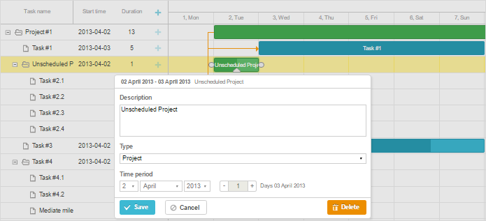

There's a possibility to add tasks without dates into the Gantt chart.

It can be implemented by setting the unscheduled property with the value true in the task's description:
{"id":1, "text":"Project #1", "type":"project", "progress": 0.6, "open": true},
{"id":2, "text":"Task #1", "unscheduled":false, "start_date":"02-04-2019", "parent":"1"},
{"id":3, "text":"Task #2", "unscheduled":true,"start_date":"","duration":"","parent":"1"}
Thus, the task with the id "3" will be added to the gantt without the start date and displayed as an empty row.
In order to display unscheduled tasks, use the config parameter show_unscheduled set to true:
gantt.config.show_unscheduled = true;
Note, that gantt will assign default dates to unsheduled tasks. Meaning that start_date/end_date properties of such task objects won't be empty:
var task = gantt.getTask(3);
console.log(task.unscheduled);
// true
console.log(task.start_date);
// Tue Jun 25 2019 18:42:50
Related sample: Show Unscheduled Tasks
Back to top